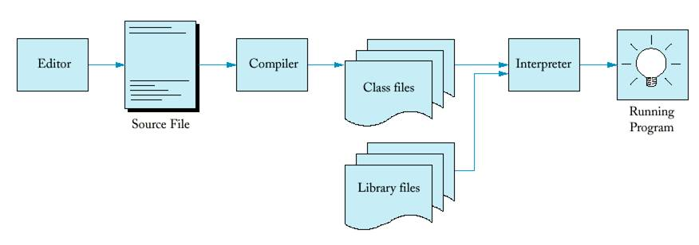
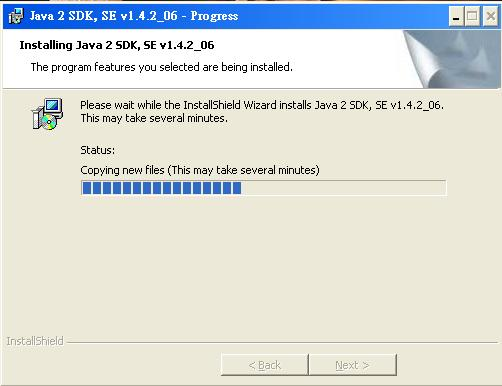
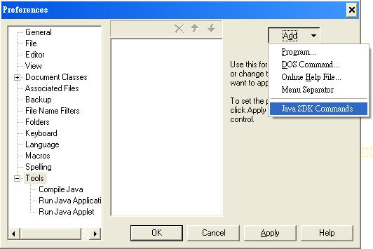
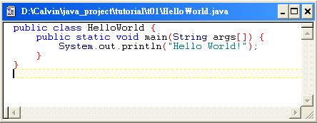
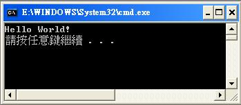
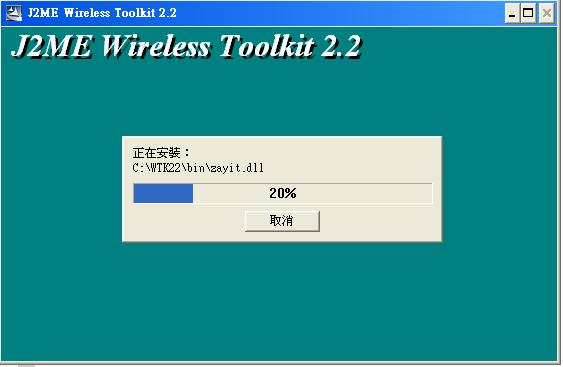
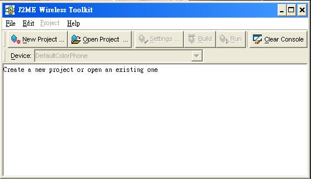
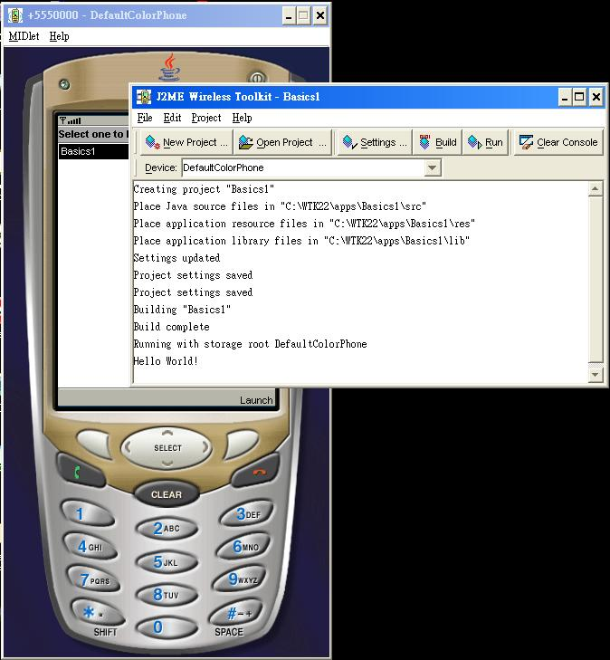

Below is a flow chart of how the Java code written being transformed to a running program.

To compile and run java, we firstly need to download the standard development kit (SDK) for J2SE (Java 2 Platform Standard Edition). The latest version of J2SE is 1.5.0.
To download, visit: http://java.sun.com/j2se/1.5.0/download.jsp, then
1. Click "Download JDK 5.0 Update 6".
2. Select "Windows Offline Installation, Multi-language".
3. Execute the file "jdk-1_5_0_06-windows-i586-p.exe" to install.

After downloading J2SE SDK, you can compile and run J2SE programs. However, there is no windows interface for edit source code, compile and run. To meet these needs, we suggest to use Textpad.
To download TextPad 4.7.3, visit: http://www.textpad.com/download/index.html.
In the download page, you can choose "English Only".
After installing TextPad, if necessary, click "Configure -> Preference -> Tools -> Add -> Java SDK Commands".

After installing and configuring Textpad, we can edit, compile and run J2SE standard programs using TextPad.
1. Open TextPad.
2. Type the source code as follows and save it as "HelloWorld.java", or download the file "HelloWorld.java".

3. Press "Ctrl+1" to compile.
4. Press "Ctrl+2" to run the program.
You can see the string "Hello World!" is printed out.
Now, you can use Textpad to write J2SE programs. However, our goal is to write Java 2 Platform Standard Edition (J2ME) programs for mobile phones. Originally, you have to download CLDC 1.1 and MIDP 2.0 for developing J2ME programs for mobile phones. Now, you can simply download J2ME Wireless Toolkit 2.2 which includes CLDC 1.1, MIDP 2.0 and interfaces to compile and run J2ME program.
To download J2ME Wireless Toolkit 2.2, visit: http://java.sun.com/products/j2mewtoolkit/download-2_2.html, then
1. Click "Download" at the bottom of the page.
2. Accept "Licence Agreement".
3. Select "Windows Platform" to download.
4. Execute the file "j2me_wireless_toolkit-2_2-windows.exe" to install.

Now you can run sample J2ME programs. The steps are as follows:
1. Launch the "ktoolbar" in the J2ME Wireless Toolkit.
2. Click "Open Project".
3. Select a Project to open (says "Games").
4. Click "Run".

In order to develop your own Program, you should know how to create a new Project using "ktoolbar". The steps to create a very simple project for a "HelloWorld" program is a follows:
1. Launch the "ktoolbar" in the J2ME Wireless Toolkit.
2. Click "New Project".
3. Type "Basics1" in both text boxes for "Project Name" and "Midlet Class Name".
4. Click "Create Project" and click "OK".
5. You can see a sentence saying that the location of "Java source files".
6. Download the file "Basics1.java" and save to that location (something like "C:\WTK22\apps\Basics1\src").
7. Click "Build" to compile.
8. Click "Run" to execute the program.
You will see the string "Hello World!" in the console after you click the "Launch" button in the mobile phone.
